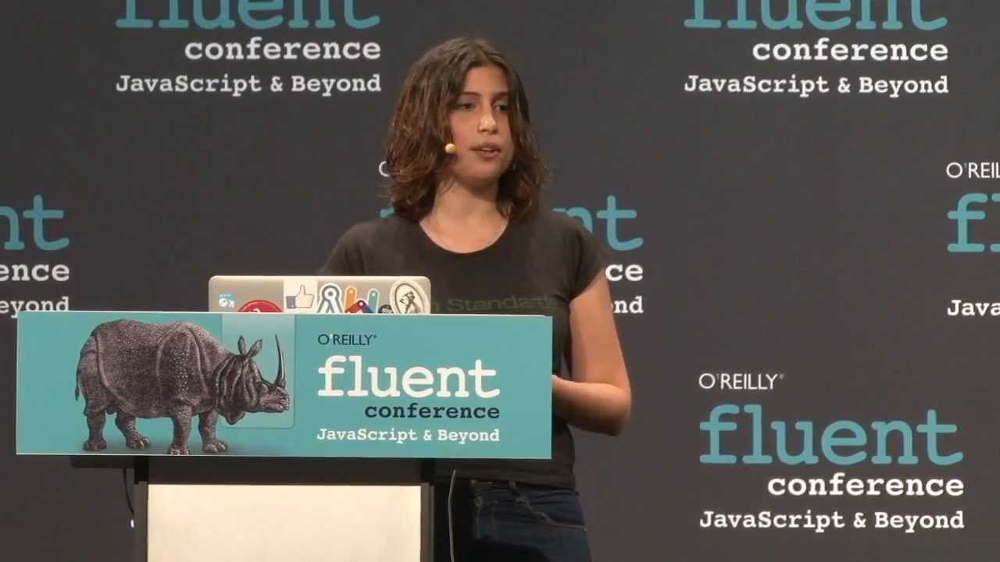

Lea Verou

Lea Verou est une développeur web front-end , conférencière et auteur , originaire de Lesbos en Grèce . Elle est actuellement assistante de recherche au MIT CSAIL , avec David Karger au sein du groupe Haystack et une experte invité dans le Groupe de travail CSS du W3C.
Elle a écrit un livre sur les CSS avancés pour O'Reilly, a entre-autre travaillé pour le W3C et le MIT, donné plus de 60 conférences à travers le monde, a publié plusieurs projets open source et a co-fondé une startup grecque appelé Fresset Ltd (qu'elle a quitté en 2011). Elle a écrit des articles pour plusieurs magazines dans l'industrie de conception Web, y compris A List Apart et Smashing Magazine.